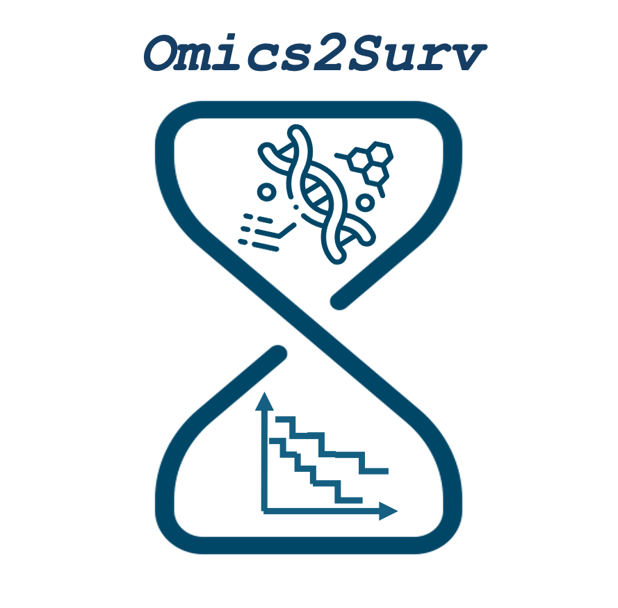
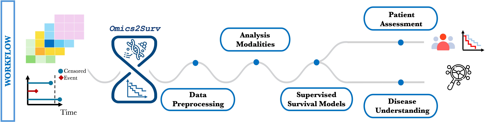

Omics2Surv
Integrative survival analysis for multi-omics data
Omics2Surv is an R package for survival analysis with high-dimensional multi-omics data.
It provides a unified and extensible framework to fit, integrate, and compare survival models
across different omics layers under multiple integration paradigms.
📦 Package overview
Omics2Surv key features:
📥 Support for heterogeneous multi-omics data
🔗 Multiple data integration strategies:
🍔 Standardized data handling via MultiAssayExperiment
📊 Unified performance evaluation
🔁 Fair and reproducible model comparison
📉 Classical, machine learning, and deep learning survival models
🔀 Analysis workflow

Omics2Surv follows a modular workflow: 1. Multi-omics input data 2. Harmonization and preprocessing 3. Integration strategy selection 4. Survival model fitting 5. Performance evaluation 6. Patient Assessment 7. Visualization
📉 Supported modeling strategies
Single-omics, early and late integration
Cox LASSO / Elastic Net / Adaptive LASSO
Penalized Cox models for high-dimensional omics data.Penalized AFT models
Accelerated Failure Time models with regularization.
Joint integration models
CoopCox / AFTCoop
Cooperative regression models that encourage agreement across omics layers.blockForest
Random Forests adapted for grouped multi-omics predictors.flexynesis
Deep learning–based survival models implemented via Python backend.
| Method | Reference |
|---|---|
| Cox LASSO / Elastic Net | Noah Simon et al. (2011) |
| Cox Adaptive LASSO | Hao Helen Zhang , Wenbin Lu (2007) |
| Penalized AFT | Piotr M. Suder, Aaron J. Molstad (2022) |
| CoopCox | Georg Hahn et al. (2024) |
| AFTCoop | Angelini et al. (2025) |
| blockForest | Roman Hornung, Marvin N. Wright (2019) |
| flexynesis | Bora Uyar et al. (2025) |